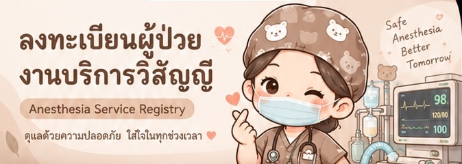

ภาพรวมผู้ป่วย
SDMC · SK · ER · OB · EYE & ENT · SU · ORTHO
รับบริการทั้งหมด
0 ครั้ง
ผู้ป่วยใช้ซ้ำ 0 ราย
ในเวลา
0 ครั้ง
08:00–16:00นอกเวลา
0 ครั้ง
รายการล่าสุด
▤ ยังไม่มีข้อมูล
เริ่มลงทะเบียนผู้ป่วยเพื่อดูรายการล่าสุด
เริ่มลงทะเบียนผู้ป่วยเพื่อดูรายการล่าสุด

ทะเบียนผู้ป่วย
รายการรับบริการและประวัติย้อนหลัง
| วันที่ | HN | ชื่อ–สกุล | หน่วยงาน | Technique | เริ่ม | PACU | จัดการ |
|---|
สรุปสถิติวิสัญญี
นับใน / นอกเวลาจากเวลาเริ่มให้บริการ
เคสทั้งหมด0
ในเวลาราชการ*0
นอกเวลาราชการ*0
Pass PACU0
จำนวนเคสตามหน่วยงาน
สถิติตาม Technique
สถิติตาม Device
* ค่าเริ่มต้น: วันจันทร์–ศุกร์ 08:00–16:00 น. ยังไม่ได้ตัดวันหยุดราชการออก การใช้งานจริงต้องตรวจสอบกติกาวันหยุดของหน่วยงานก่อนใช้รายงานทางการ
เชื่อมต่อฐานข้อมูล
ต้องเชื่อมต่อก่อนบันทึกข้อมูลจริง
สถานะ: โหมดตัวอย่าง
ตั้งค่า SUPABASE_URL และ SUPABASE_ANON_KEY ในไฟล์ config.js และติดตั้ง schema.sql ก่อนใช้งานจริง การสร้างผู้ใช้และกำหนดสิทธิ์ทำโดยผู้ดูแลระบบ
ข้อมูลผู้ป่วยเป็นข้อมูลอ่อนไหว ไม่ควรใส่รหัสผ่าน, service_role key หรือข้อมูลจริงใน GitHub Repository สาธารณะ